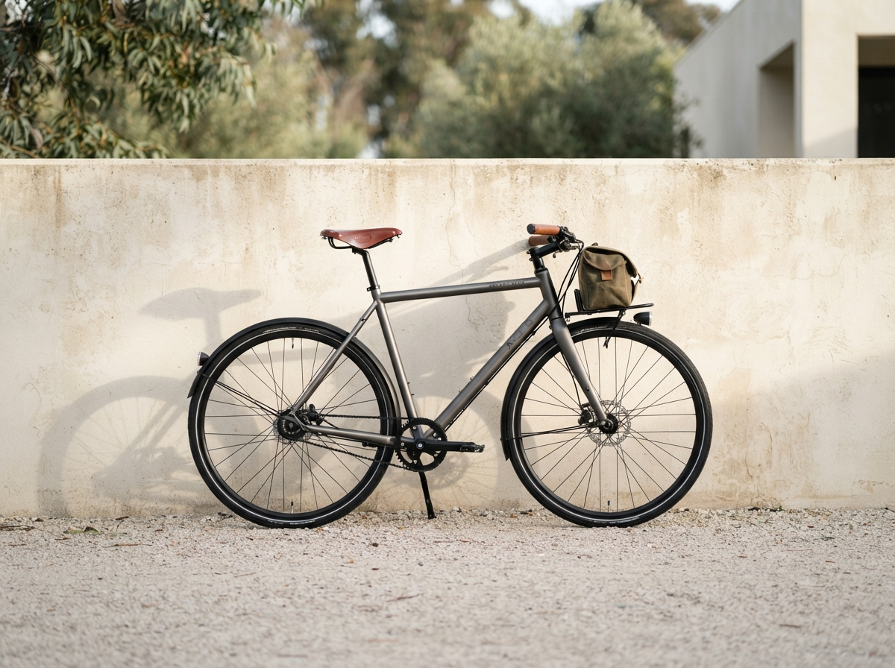
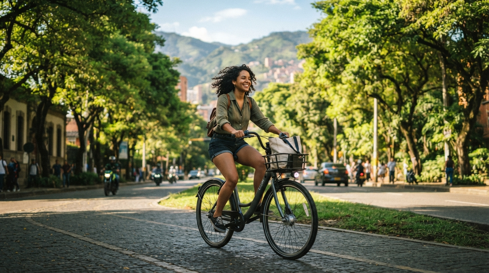
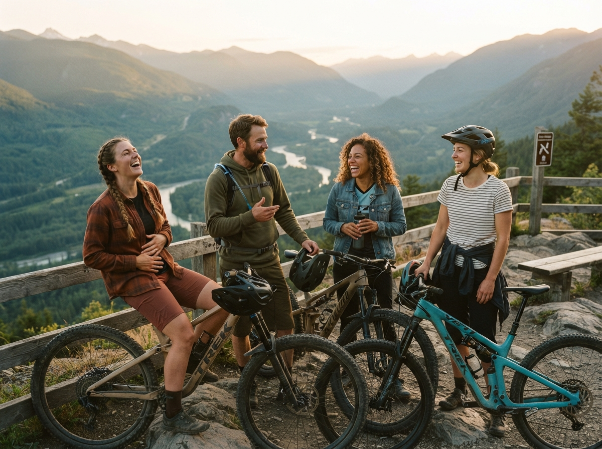

Alquiler de bicicletas
Disponemos de una flota variada para todos los estilos y necesidades. Cada alquiler incluye casco y candado sin costo adicional. Consulta todas nuestras tarifas de alquiler aquí.

Bienvenidos a Rueda Libre. Te ayudamos a descubrir la ciudad sobre dos ruedas con total libertad y seguridad. Si quieres visitarnos o contactarnos directamente, ve a la sección de Encuéntranos.

Somos un equipo apasionado por la movilidad sostenible y el ciclismo urbano. Nacimos en Medellín para ofrecer soluciones prácticas a quienes desean transportarse, hacer ejercicio o explorar la ciudad de una forma diferente, saludable y divertida.
Disponemos de una flota variada para todos los estilos y necesidades. Cada alquiler incluye casco y candado sin costo adicional. Consulta todas nuestras tarifas de alquiler aquí.

Nuestra flota de última generación para recorrer la ciudad sin esfuerzo. Cada alquiler incluye casco y candado. Consulta las tarifas aquí.
Explora los mejores paisajes y rincones históricos de la región en compañía de guías expertos. Conoce nuestros recorridos guiados y precios.
Servicio de mantenimiento preventivo, ajustes rápidos y asistencia mecánica básica para que tu bicicleta siempre esté a punto.

Estamos listos para atenderte. Escríbenos a nuestro correo de contacto: hola@ruedalibre.example
También puedes revisar cómo llegar a nuestra sede principal consultando el mapa en línea: Abrir ubicación en Google Maps